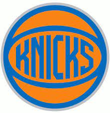
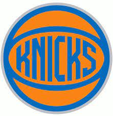

The Knicks are one of the most historic franchises in all of sports, and their logo has stayed consisant for the most part. They rotate through old classic logos and the recent ones to keep the historic energy alive.
 
